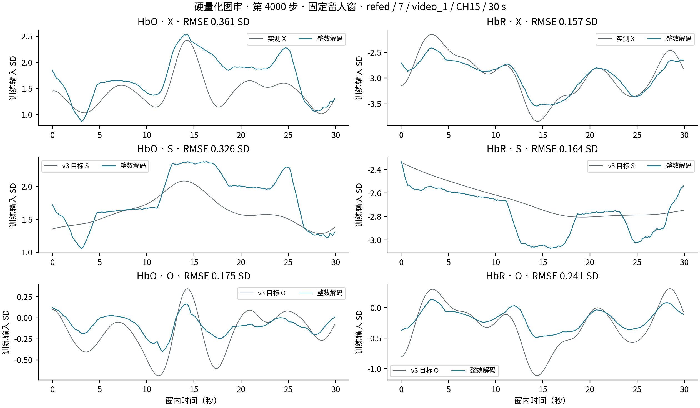
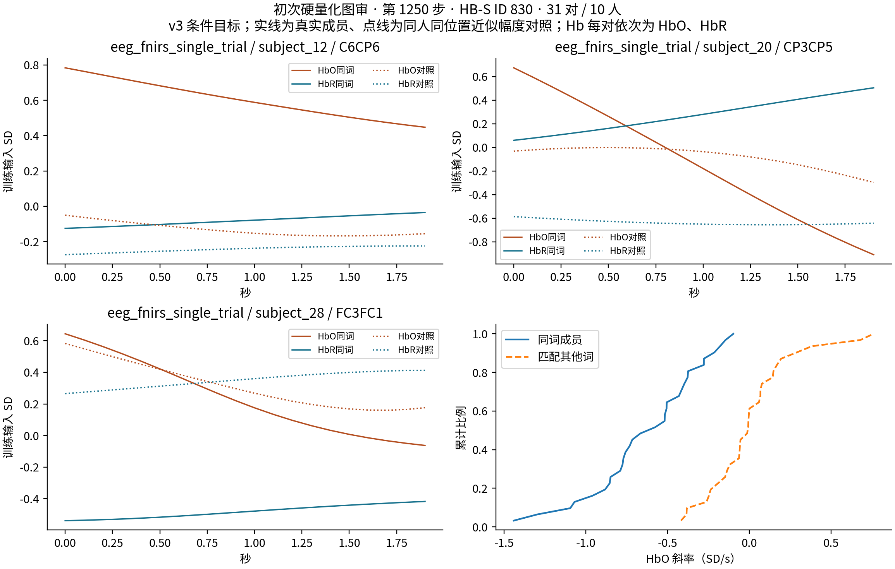
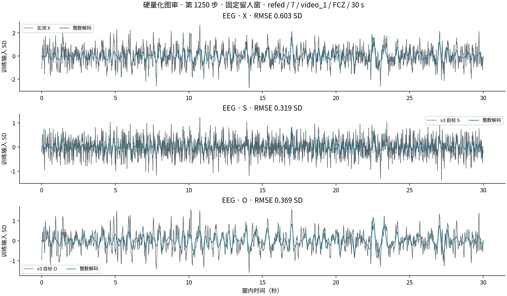
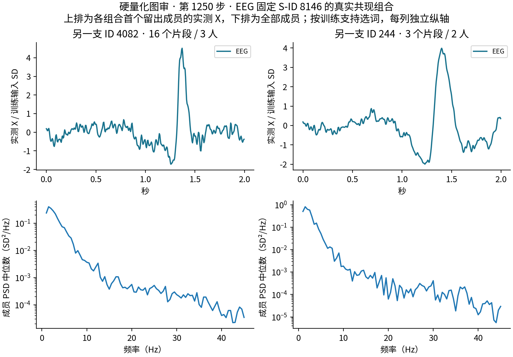

2026-11-26。四库原训练人按人重划为 48 名拟合、12 名内部留出。X 是观测，S 和 O 是 v3 条件分量。波形只能由本分支的整数解码；预览中的整数回放逐元素相等。本页是训练中间的固定快照。最终比较另用同一套第 10,000 步选定的较好、中位、困难窗口。
两图使用同一个 REFED 被试 7、video_1、CH15，从 30 秒开始的完整窗口。第 1,250 到 4,000 步，X-HbO 的 RMSE 从 0.794 降至 0.361 个训练输入标准差，X-HbR 从 0.589 降至 0.157。第 4,000 步 HbO 的约 14 秒主峰已经接近，约 25 秒的解码峰过高。O-HbR 的 RMSE 从 0.184 升至 0.241；总波形改善仍可伴随个别分量恶化。
第 1,250 步原图 · 第 4,000 步原图
第 1,250 步，S 词 830 在 10 人的 31 对片段中，HbO 斜率分布偏向负值。O 词 425 在 9 人的 60 对片段里与幅度匹配的其他词有大量重叠。两词的证据强度不同。对照匹配同人、同原生位置，RMS 比在 0.8–1.25 内，并排除同一父记录中重叠的 30 秒窗口。斜率描述的是 v3 目标，不能仅凭这个读出赋予任务或生理状态标签。
S 词 830 的跨人真实成员 · O 词 425 及匹配其他词
第 1,250 步，REFED 同一被试的 FCZ 窗口中，约 14 秒的负向尖谷被压低。X、S、O 的 RMSE 分别为 0.603、0.319、0.369 个输入标准差。对应的目标幅值不同。

上行为各组合首个真实留出成员，两例都在约 1.3–1.5 秒出现正向峰。下行是各组片段的实测 X 功率谱密度中位数，两组均以低频功率较强。O 词 4082 对应 16 个片段、3 人，244 对应 3 个片段、2 人。该分组按训练共现支持选定，尚不足以归为特定生理类别或解释任务条件。两列独立纵轴。

反向固定 EEG-O · 固定 Hb-O 看双色波形 · 固定 Hb-S原对齐模型的历史图审 · 监督与恢复记录 · EEG 组合分母 · Hb 组合分母